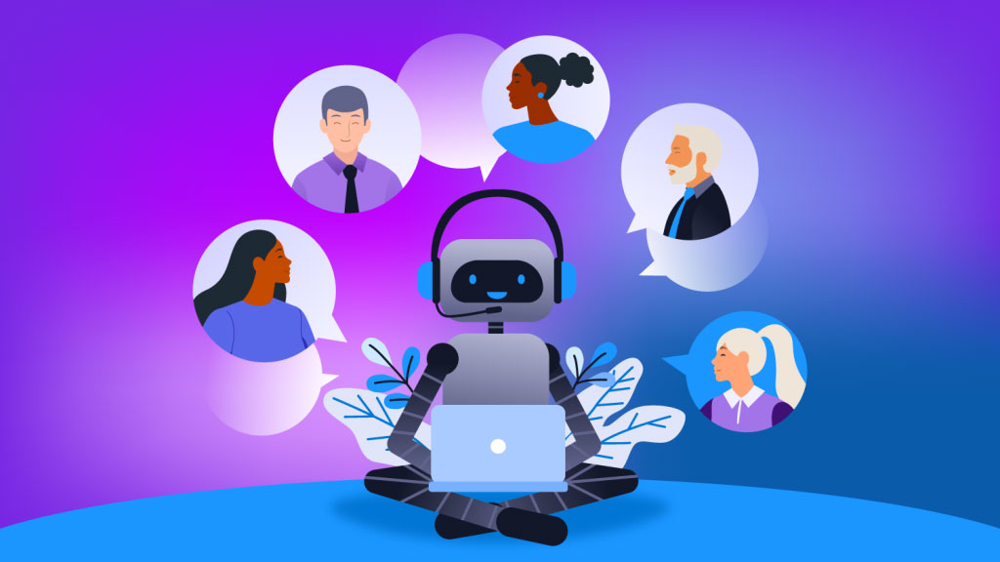

Modern customers expect more than just support—they expect instant, intelligent, and personalized interactions across every touchpoint. Traditional support systems, built around human agents and ticket queues, often struggle to meet these expectations at scale. AI chatbots are fundamentally changing this dynamic.
By combining natural language understanding, machine learning, and real-time data processing, AI chatbots are enabling businesses to deliver high-quality customer support while simultaneously driving sales automation and revenue growth.
For organizations exploring this shift, solutions offered by Cybermax Solutions are increasingly becoming central to digital transformation strategies.
AI Chatbot Statistics & Market Trends
AI chatbots are rapidly becoming a core component of modern customer experience and sales strategies. Several industry studies highlight their growing impact:
- Up to 70% of customer interactions can be automated using AI and conversational technologies, significantly reducing operational costs.
- Around 80% of businesses are expected to adopt AI-powered chatbots for customer interactions to improve efficiency and scalability.
- Companies using AI chatbots have reported up to 30% reduction in customer support costs while improving response times.
- AI-driven personalization can increase conversion rates by 10–20%, especially in e-commerce and SaaS environments.
- A majority of customer experience leaders believe AI will fundamentally transform customer engagement within the next few years.
These trends clearly indicate that AI chatbots are no longer experimental—they are becoming a mainstream business necessity.
What Are AI Chatbots? Definition, Features, and Capabilities
AI chatbots are intelligent conversational systems that use Natural Language Processing (NLP), Machine Learning (ML), and Large Language Models (LLMs) to understand user intent and deliver real-time, context-aware responses.
Unlike traditional chatbots that rely on predefined scripts and decision trees, AI chatbots are designed to interpret meaning, maintain context across conversations, and continuously improve through data.
Key Capabilities of AI Chatbots
- Intent Recognition and Context Understanding - AI chatbots go beyond keyword matching to understand the intent behind user queries, enabling more natural and relevant interactions.
- Continuous Learning and Improvement - By analyzing past conversations and user behavior, AI chatbots refine their responses over time, improving accuracy and effectiveness.
- Multi-Step Conversation Handling - Modern chatbots can manage complex workflows such as troubleshooting, onboarding, or completing transactions without requiring human intervention.
- Personalization at Scale - AI chatbots leverage historical data and behavioral insights to deliver tailored responses, recommendations, and experiences for each user.
- Seamless System Integration - They integrate with CRM systems, databases, and business applications to access real-time data and execute actions such as updating records or triggering workflows.
These capabilities are driven by advanced AI frameworks, including custom LLM models and generative AI systems. Businesses aiming to leverage this potential often turn to specialized LLM Development services and Generative AI Solutions to accelerate deployment and ensure real-world impact.
Evolution of Chatbots: From Rule-Based to Intelligent AI
| Capability Dimension | Traditional Chatbots | AI-Powered Chatbots |
|---|---|---|
| Language Understanding | Conversations are rigid and limited to predefined scripts | Conversations are fluid, context-aware, and adaptive |
| Learning Ability | No learning capability; requires manual updates | Continuously improves based on data and interactions |
| Problem Solving | Handles only simple queries | Capable of handling complex, multi-step scenarios |
| Business Impact | Limited efficiency gains | Drives both operational efficiency and revenue growth |
How AI Chatbots Are Transforming Customer Support
AI chatbots are fundamentally reshaping customer support by enabling businesses to deliver faster, more consistent, and highly scalable service without proportional increases in cost.
24/7 Customer Support Without Operational Overhead
AI chatbots provide round-the-clock assistance, ensuring that customers receive instant responses regardless of time zones or support volumes.
- Eliminate wait times and support queues
- Maintain consistent service quality during peak demand
- Reduce dependency on large support teams
This allows businesses to scale support operations efficiently while controlling costs using integrated AI-driven automation systems. Learn more about enterprise AI solutions.
Faster Resolution Through Real-Time Responses
Traditional support models often involve delays due to ticket queues and manual handling. AI chatbots eliminate these bottlenecks by:
- Providing instant answers to common queries
- Handling thousands of conversations simultaneously
- Guiding users step-by-step toward resolution
The outcome is significantly reduced resolution time and improved customer satisfaction—especially when deployed through custom-built AI chatbot platforms tailored to business needs. Explore chatbot development services.
Personalized and Context-Aware Support
AI chatbots leverage customer data and interaction history to deliver highly personalized experiences.
- Recognize returning users and their preferences
- Tailor responses based on past interactions
- Maintain context across conversations
This creates a seamless experience where customers don’t need to repeat information, improving both efficiency and satisfaction.
Intelligent Ticket Routing and Escalation
AI chatbots streamline backend support workflows by automatically managing query classification and escalation.
- Categorize queries based on intent and urgency
- Route complex issues to the right team or agent
- Ensure faster and more accurate resolution
This ensures that human agents are focused on high-value interactions while AI handles routine queries—creating a balanced, efficient support ecosystem.
How AI Chatbots Drive Sales Automation
Engaging and Qualifying Leads in Real Time
AI chatbots transform passive website visitors into active prospects by engaging them instantly. Rather than waiting for users to fill out forms, chatbots:
- Initiate conversations based on user behavior, such as time spent on a page or specific actions taken.
- Ask relevant questions to understand user requirements and qualify leads effectively.
- Segment prospects based on intent, ensuring that sales teams focus on high-quality opportunities.
Delivering Personalized Product Recommendations
AI chatbots analyze user behavior and preferences to provide highly targeted product or service recommendations. This enables businesses to:
- Guide users toward the most relevant offerings, improving decision-making.
- Increase conversion rates by presenting personalized options rather than generic suggestions.
- Enhance user experience by reducing the effort required to find suitable solutions.
Automating Follow-Ups and Lead Nurturing
A significant number of potential deals are lost due to delayed or inconsistent follow-ups. AI chatbots address this by:
- Sending timely reminders and follow-up messages based on user interactions.
- Sharing relevant content, offers, or updates to keep prospects engaged.
- Re-engaging inactive users and bringing them back into the sales funnel.
Integrating Seamlessly with CRM and Sales Systems
AI chatbots act as a bridge between customer interactions and backend systems. They can:
- Automatically log interactions into CRM platforms, ensuring accurate data capture.
- Trigger workflows such as lead assignment, email campaigns, or notifications.
- Provide sales teams with actionable insights, enabling more informed decision-making.
Key Business Benefits
| Business Benefit | Detailed Impact |
|---|---|
| Operational Efficiency | Automating repetitive tasks reduces workload on support teams and improves overall productivity |
| Cost Optimization | Businesses can scale support operations without significantly increasing costs |
| Improved Customer Experience | Faster responses and personalized interactions lead to higher satisfaction levels |
| Revenue Growth | Intelligent recommendations and lead qualification improve conversion rates |
| Data-Driven Insights | Chatbots capture valuable data that can be used for strategic decision-making |
Industry Use Cases
Healthcare
AI chatbots are significantly improving patient engagement and operational efficiency across healthcare providers, clinics, and hospitals. Beyond basic scheduling, they are now being used to:
- Provide preliminary symptom assessment by guiding patients through structured questions before connecting them to medical professionals.
- Deliver post-treatment follow-ups, ensuring patients adhere to medication schedules and recovery protocols.
- Assist in insurance-related queries, helping patients understand coverage, claims, and documentation requirements.
This not only reduces administrative workload but also enhances patient satisfaction through faster and more accessible support.
E-commerce & Retail
In the highly competitive e-commerce landscape, AI chatbots play a critical role in enhancing the customer journey and increasing conversions. In addition to recommendations, they:
- Act as virtual shopping assistants, helping users discover products based on preferences, budget, and real-time behavior.
- Handle order tracking, returns, and refund queries, reducing pressure on customer support teams.
- Enable cart recovery strategies by re-engaging users who abandon purchases through timely nudges and offers.
These capabilities directly impact key metrics such as conversion rate, average order value (AOV), and customer retention.
Banking & Finance
AI chatbots are transforming digital banking experiences by providing secure, real-time assistance while reducing operational costs. Advanced use cases include:
- Offering personalized financial insights, such as spending patterns, savings recommendations, and budgeting tips.
- Supporting loan and credit card applications by guiding users through eligibility checks and documentation processes.
- Enhancing fraud detection and alerts, enabling proactive communication when suspicious transactions occur.
With increasing demand for 24/7 digital banking, chatbots are becoming a critical interface between customers and financial institutions.
SaaS & Technology
For SaaS companies, AI chatbots are essential for improving user onboarding, engagement, and retention. Their role extends beyond basic support to:
- Deliver interactive onboarding experiences, guiding users step-by-step through platform features.
- Provide contextual in-app support, resolving issues without requiring users to leave the application.
- Assist with upselling and cross-selling, recommending relevant features or plans based on usage patterns.
This results in improved product adoption, reduced churn, and higher customer lifetime value (CLTV).
Travel & Hospitality
AI chatbots are also widely adopted in the travel and hospitality sector to streamline customer interactions and enhance guest experiences. They:
- Help users with booking flights, hotels, and itineraries in real time.
- Provide instant updates on travel schedules, cancellations, or delays.
- Offer personalized travel recommendations based on preferences, past trips, and seasonal trends.
By delivering fast and contextual responses, chatbots improve both customer satisfaction and operational efficiency in a highly dynamic industry.
How to Implement AI Chatbots Successfully
A structured approach ensures successful implementation:
- Begin by identifying high-impact use cases where automation can deliver immediate value, such as customer support or lead generation.
- Choose between pre-built solutions for faster deployment or custom-built systems for scalability and flexibility.
- Train the chatbot using relevant datasets to ensure it understands domain-specific queries effectively.
- Integrate the chatbot with existing systems such as CRM and helpdesk platforms to enable seamless workflows.
- Continuously monitor performance metrics and refine the system to improve accuracy and user satisfaction.
Challenges & Limitations of AI Chatbots
While AI chatbots offer significant advantages, businesses must also consider certain limitations to ensure successful implementation.
1. Limited Understanding Without Proper Training
AI chatbots rely heavily on training data. Poorly trained models may misinterpret user intent or provide inaccurate responses, leading to a suboptimal user experience.
2. Handling Complex or Sensitive Queries
Although AI chatbots can manage a wide range of scenarios, highly complex, emotional, or sensitive issues often require human intervention.
This makes a hybrid model (AI + human agents) essential for delivering optimal customer support.
3. Integration Challenges
Integrating chatbots with existing systems such as CRM platforms, databases, and legacy tools can be technically complex and resource-intensive.
4. Data Privacy and Security Concerns
AI chatbots process large volumes of user data, making data protection and compliance critical considerations—especially in regulated industries like finance and healthcare.
5. Ongoing Maintenance and Optimization
AI chatbots are not “set-and-forget” systems. They require continuous monitoring, training, and optimization to maintain accuracy and performance over time.
Bottom Line: AI chatbots deliver maximum value when implemented strategically, with the right balance between automation and human oversight, robust training, and continuous improvement.
Future Trends
AI chatbots are rapidly evolving from basic support tools into strategic business assets. Key trends shaping this shift include:
- Hyper-personalization powered by real-time data - Modern chatbots use customer data, behavior patterns, and interaction history to deliver highly personalized experiences—driving higher engagement, better customer satisfaction, and improved conversion rates.
- Voice-enabled conversational interfaces - As voice adoption grows, businesses are enabling chatbot interactions through voice across mobile apps and smart devices, creating more natural and accessible customer experiences.
- AI copilots for customer support teams - Chatbots are increasingly augmenting human agents by suggesting responses, retrieving relevant information instantly, and automating repetitive queries—leading to faster resolution times and increased team productivity.
- Deep enterprise integrations - Advanced chatbots are tightly integrated with CRMs, ERPs, and internal systems, allowing them to access real-time data, automate workflows, and deliver end-to-end business processes—not just conversations.
FAQs
They provide instant responses, automate repetitive queries, and ensure consistent service quality, leading to improved efficiency and satisfaction.
Yes, by engaging users proactively, qualifying leads, and delivering personalized recommendations, they significantly improve conversion rates.
Yes, scalable solutions allow businesses of all sizes to implement AI chatbots based on their needs and budgets.
Basic solutions can be deployed within weeks, while advanced implementations may take a few months.